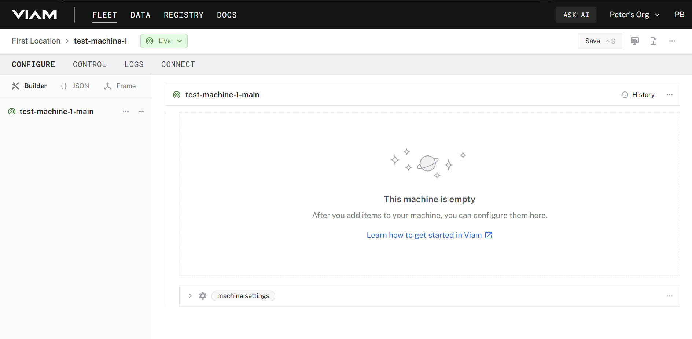
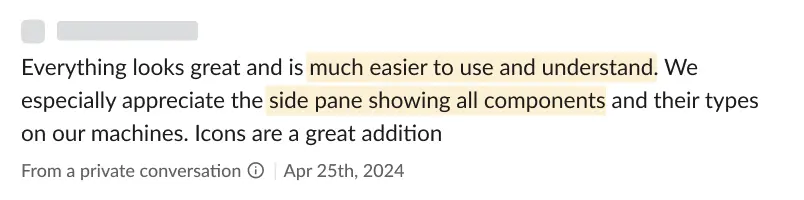
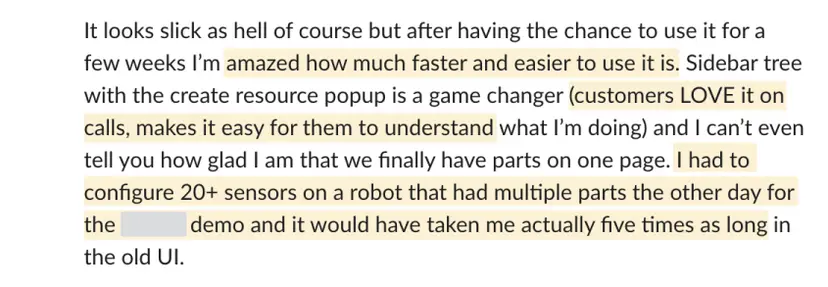
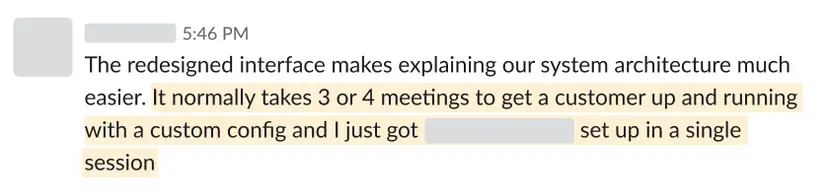
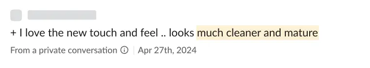
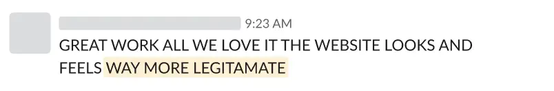
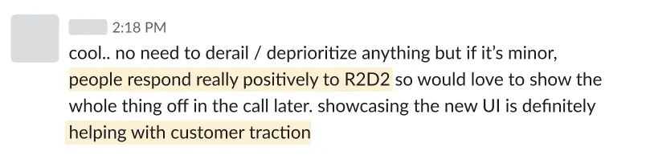
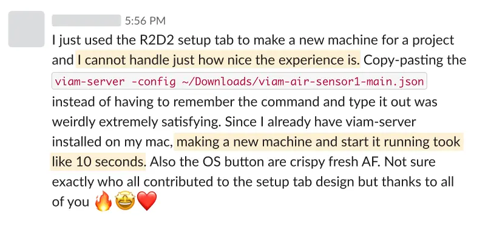

Unlocking data & AI in the physical world
Lead Product Designer — Strategy, Competitive Research, Experience Design, User Research, Visual Design
Eliot Horowitz, Project Owner
Peter Borges, Designer
Sierra Guequierre, TPM
7 Engineers
4 Months, Launched Feb 2024
Viam has been working since 2019 to create a new standard for hobbyist developers to Fortune 500 businesses to configure, launch, control, and monitor their fleets of IoT and robotic devices.
To leverage the full power of Viam's ecosystem of products—from data aggregation to machine learning models to a registry of compliant components—users need a way to efficiently configure and test their new smart machines.
Machine configuration acts as the core of the VIAM platform, and other product services such as Fleet Management, Data, Machine Learning, & Registry derive their ecosystem-level value from it.
Extended and migrated the PRIME design system to support the new UI patterns needed for machine configuration.

The redesign addressed long-overdue improvements to the machine configuration experience, transforming a fragmented interface into a clearer, more structured workflow. Beyond immediate usability gains, it established a stable foundation for future feature development and scalability. The response from both customers and internal teams was overwhelmingly positive:







This project delivered measurable success. It reduced engineering support load, improved user confidence, and helped close deals with Tennibot and the Billion Oyster Project. A phased launch and earlier design system alignment could have accelerated delivery.